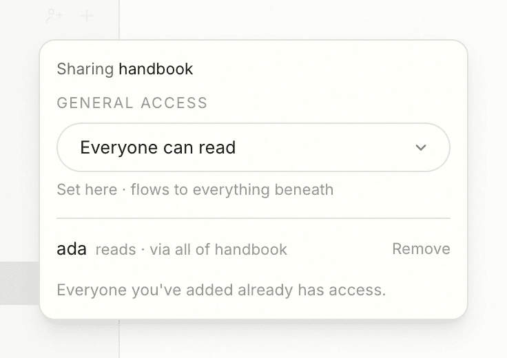

Permissions
Permissions are where most knowledge tools get honest too late. Hanji tries to get honest early, which means telling you plainly what the lock does today and what it does not do yet.
The model
Two planes. One is an open human front, where a team reads and writes in the clear. The other is the set of sensitive areas that must stay closed, the meeting notes and the decisions and anything you would not tack to a shared wall. The whole design rests on one rule: every surface honors the same check. Search, wikilinks, page reads, and the agent tools all ask the same question before they show you anything, so there is no back door where a locked title slips out through search, or a link resolves to a page you were never allowed to open.
That is not a claim to make lightly, so here is how it actually works.
One read path
Every read Hanji serves runs through a single module. The scope check, which mounts may this reader see, is compiled in exactly one place and nowhere else. Search filters to your readable mounts before it runs. A page read returns nothing for a mount you cannot see. Wikilink resolution uses the same filter. This is the boring, load-bearing part. There is one door, and it is the same door for people and for agents.
A locked page and a page that does not exist look identical to a reader who lacks access. Both come back as not found. You cannot probe the shape of what you are not allowed to see.
Scopes today
Access is granted per mount, in three levels.
| Scope | The reader can | The reader cannot |
|---|---|---|
| none | see nothing of the mount, not even that it exists | read, search, or link into it |
read | read, search, and follow links inside the mount | write, or propose changes |
read+propose | everything read can, plus propose changes as a branch or PR | merge, or write directly |
read+write | everything read+propose can, plus commit to base from the front and upload images | merge, or restructure the tree |
read+write is for people only: a token never holds it.
The owner sees every mount. An agent gets a bearer token whose scopes take the same shape as a person's grants - on a pages mount, a whole mount, a folder, or exactly one page - so an agent that helps with the engineering docs never sees the folder of sensitive notes, even when both live in the same repository. See Agents for how that works in practice. The agents Hanji Plan runs hold one such token each, named agent-<handle>, which the tracker and its session host read by name in process, with no bearer in hand. The token scopes Hanji's own tools, prompts and briefs; a Plan session also runs on the owner's machine, where the operating-system user is the boundary (see Agents).
Visibility belongs to the content
The model reads the way Notion and Confluence taught everyone to think. Content carries a general access level - Everyone can read, Everyone can suggest, or Restricted - set on a mount, a folder, or a single page (on a pages mount; see Grants on a tracker and on boards below), flowing down to everything beneath (a tracker takes Everyone can read or Restricted; read plus suggest equals read there). Open content is simply open: no per-person bookkeeping. Restricted content is dark by default, and the deepest rule covering a page wins, so one restricted folder inside an open mount goes dark for everyone.
People are the exceptions. A person granted a path - on a pages mount, a mount, a folder, or exactly one page - punches through a restriction at or below their grant. That is the 1:1 note: a restricted folder, two names, and nobody else sees it in the tree, in search, or through a wikilink. A locked page still looks identical to a page that does not exist.
Sharing lives where the content lives (in team mode - solo keeps this chrome hidden until you switch, in Settings): a Share control on every page, and on every mount and folder in the sidebar, showing the general access (and where it is inherited from), the people with specific access and through which grant, and a one-line way to add someone with read, suggest, or edit. Settings keeps the overview: a Mount access tab for general access per mount, and a People tab for everyone's grants in one place. Revoking takes effect on the person's next request. The rule and grant tables are the implementation; the page is the interface.

One deliberate exception: agents never inherit "everyone". A token sees exactly the scopes it was minted with, whatever the content rules say - opening a mount to your team never opens it to a bot.
People, same scopes
The same levels apply to humans. The owner adds a person in Settings with a name, a password, and per-mount scopes: read makes a viewer, read+propose makes a contributor whose Update reads Propose and lands in the owner's review card, and read+write makes an editor whose Update commits to base, the way the owner's does. Nobody but the owner restructures the tree, reviews proposals, or sees settings. In user terms: viewers read, contributors suggest, editors write, the owner decides. One read path, one review ceremony, whatever species the writer is.
Grants on a tracker and on boards
A work mount, which holds a tracker, and a think mount, which holds boards, take the same three levels, named for what each allows there:
| Mount | read | read+propose | read+write |
|---|---|---|---|
| pages | viewer: reads and searches | contributor: proposes changes | editor: commits from the front |
| work | viewer: sees the tracker | the same as read | editor: changes issues |
| think | viewer: sees the boards | commenter: comments and reacts | editor: edits the boards |
Settings offers Viewer and Editor on a work mount, and Viewer, Commenter and Editor on a think mount, and tags those mounts as tracker and boards. A grant or a general-access rule on a work mount covers the whole mount, so every reader of the tracker sees the same issues; on a think mount it covers the mount, a folder of boards or one board, at any depth. Hanji Plan honors these grants on a tailnet. View (read) opens the tracker; without it, every Plan address answers 404, the same for an issue that exists and one that does not. Edit (read+write) with an entry under people: in the tracker file lets a person change issues and file an issue from a page in Document or from a sticky in Think, as themselves. The owner can do both without a people: entry. A person who may write a mount of pages, or propose on one, can write up a board section or a selection as a page there from Think, as themselves; a proposal lands in Document's review, on a local mount as a branch of the folder's own repository. Undo deletes only the page that press wrote, within the notice's ten seconds; deleting any other page stays in Document. Actions that let an agent run code on the owner's machine stay with the owner, whatever the grant. Hanji Think honors these grants too: a Viewer opens a board, a Commenter comments, reacts and votes in an open voting session, an Editor edits it and facilitates timers and voting; without a grant on a board, every Think address for it answers 404, the same as for a board that does not exist. On a tailnet, Document, Plan and Think sign a request in by its tailnet login only when its Host is this machine's loopback address or the host of one of the product addresses (HANJI_KB_URL, HANJI_TRACKER_URL, HANJI_THINK_URL), so a web page open on the same machine cannot sign itself in. See On your tailnet.
Cited by follows the work mount's grants: a page lists an issue only for a reader who can read the tracker's mount.
What is honest about it
One residual is worth naming. Ranking statistics are counted under your own scope, so indexing a page you cannot read no longer moves the order or the scores you see. What is still global is the relevance figure SQLite's FTS5 computes inside the candidate pool and the page base score: its inverse document frequency counts the whole index. A reader who shapes queries and watches fine-grained order changes over time could infer roughly how often a term occurs in content outside their scope. Closing it means computing the base score in code over the text we already fetch, with scoped frequencies, and keeping FTS5's figure only to cut the candidate pool. That is planned, not done.
The unit of permission on a pages mount is now the path, down to one file (the section above covers the other kinds), for people and agent tokens alike, and it holds on the same single read path as everything else. What remains honest to say: product privacy is not storage privacy - the bytes are plaintext in a git repo, so the instance owner and the git host can always read them. A 1:1 note is hidden from every other principal; hiding it from the owner would take cryptography, which permissions do not provide. The two-plane model is real and enforced on one honest read path, and Where we are tracks the rest without rounding up.